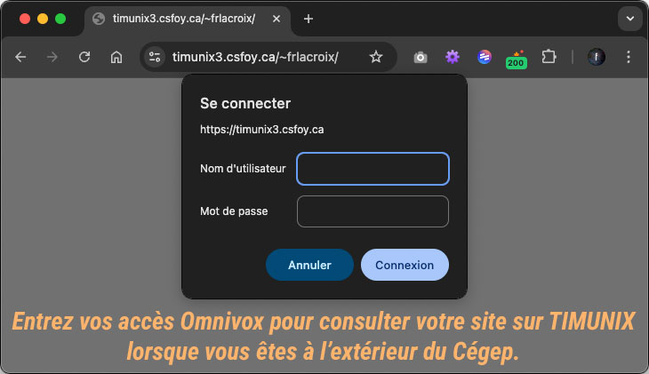
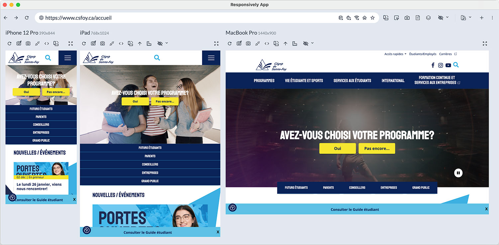

TP long: le webzine - Remise finale
Étape 1
- Lecture de l'énoncé
- Choix du thème pour le webzine et génération du contenu
- Création de la structure de dossiers complète
- Structure HTML des 9 pages sans mise en forme
Étape 2
- Création de la feuille de style externe et liaison dans tous les fichiers HTML.
- Navigation d'entête fonctionnelle
- Page d'accueil: intégration de la grille affichant les 6 articles sur la page d'accueil
- Pied de page: intégration des réseaux sociaux
- Pied de page: intégration du formulaire d'infolettre
- Intégration du formulaire de la page contact.
- Première mise en ligne sur TIMUNIX.
- Début de la recherche d'images pour les bandeaux d'entête et pour les articles.
Étape 3
- Images: recherche, redimension, optimisation et intégration
- CSS: palette de couleur, polices de caractères Google Fonts, mise en forme des sous-pages.
- Élément graphique dans l'entête et séparateur graphique
- Balises
titleetmeta description - Identification des sources
Dernier sprint avant la remise finale
- Favicon:
Créez un favicon de 32px x 32px et intégrez-le dans toutes vos pages. - Si vous remarquez que vos listes ordonnées (
ol) et non-ordonnées (ul) sont désaxées, appliquez-leur le CSS suivant:.article__liste{ margin-left:1.5em; } - Quelques rappels importants
- N’oubliez pas d’indiquer clairement vos sources.
- Dans les articles, prévoir des images flottantes et fluides dans le contenu (exemple: largeur maximale 50% sur écran large).
- Dans le bas de chaque article, avez-vous prévu une navigation vers l'article précédent et l'article suivant? (voir maquette)
- L'image des réseaux sociaux (le sprite CSS ) doit être dans votre dossier
/images, pas sur mon serveur). - Avez-vous testé votre site sur votre téléphone intelligent?
- Assurez-vous de travailler en mobile d'abord avec des points de rupture bien choisis.
- Vous tentez d'accéder à votre site Web lorsque vous êtes à l'extérieur du Cégep?
Inscrivez vos accès Omnivox.

- Vérification finale avant la remise
- Avez-vous validé vos documents HTML et CSS ?
- L'installation du logiciel Responsively peut être intéressante
pour tester la réactivité de votre site.
 - Révisez l'énoncé pour ne rien oublier! Utilisez aussi la grille d'évaluation comme liste de vérification, à partir de la page 7 de l'énoncé .
Deux remises à faire
- Sur LÉA: vous devez remettre une archive ZIP contenant votre site complet et
fonctionnel n'incluant cependant que les fichiers utilisés. (Par exemple, le dossier
/imagesne doit contenir que des images traitées et optimisées.) - Sur TEAMS: m'envoyer l'adresse de votre mise en ligne.
Échéancier
- groupe 1 : au plus tard le vendredi 12 décembre à 23h59
- groupe 2 : au plus tard le mercredi 10 décembre à 23h59
Bon congé et on se revoit en janvier!